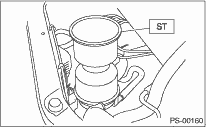

POWER ASSISTED SYSTEM (POWER STEERING) > Power Steering Fluid
1. Lift the vehicle.
2. Remove the jack-up plate.
3. Remove the pipe joint in the center of gearbox assembly, and connect the vinyl hose to the pipe and joint. Wipe fluid off while turning the steering wheel.
4. Set ST on the top of reservoir tank and fill it about half way with the specified fluid.
| ST 34199AE040 | OIL CHARGE GUIDE |

5. Maintaining the fluid level of Step 4), continue to turn the steering wheel slowly from lock to lock until the bubbles stop appearing on oil surface.
6. If the steering wheel is turned in a low fluid level condition, air will be sucked into the pipe. If air has entered, leave it for about half an hour and then repeat step 5) again.
7. Start the engine and let it idle.
8. Continue to turn the steering wheel slowly from lock to lock again until the bubbles stop appearing on oil surface, while keeping the fluid at the level in Step 4).
Normally bubbles will stop appearing after turning the steering wheel from lock to lock three times.
9. In case bubbles do not stop appearing in the tank, leave it for about half an hour and then repeat step 4) again.
10. Lower the vehicle, and then idle the engine.
11. Continue to turn the steering wheel from lock to lock until the bubbles stop appearing and change of the fluid level is within 3 mm (0.12 in).
12. In case the following happens, leave it about half an hour and then do step 8) to 11) again.
(1) The fluid level changes 3 mm (0.12 in) or more.
(2) Bubbles remain on the upper surface of the fluid.
(3) Screeching noise is generated from oil pump.
13. Check for fluid leakage after turning steering wheel from lock to lock with the engine running.